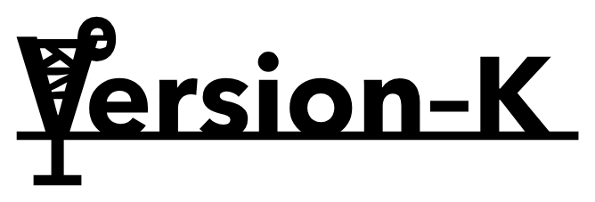

一般事務
データ入力、書類作成、資料整理、情報更新、各種リスト整備など。

採用するだけでは解決できない人手不足や業務負担に。Version-Kは、業務の整理から人材リソースの確保、実務運用まで、企業の状況に合わせた業務支援を設計します。
BPOについて相談する ↗定型業務や繰り返し発生する事務作業を整理し、社内の人材が本来注力すべき業務に集中できる環境づくりを支援します。業務内容・ボリューム・運用方法を確認し、対応可能な範囲を設計します。
データ入力、書類作成、資料整理、情報更新、各種リスト整備など。
見積書作成補助、顧客情報管理、受発注データ入力、営業資料の整備など。
応募者情報の管理、面接日程調整、求人情報更新、選考進捗の整理など。
請求関連の事務補助、経費データ整理、ファイル管理、定型業務の運用など。
投稿準備、原稿・素材整理、Web情報更新、運用レポート作成補助など。
メール受付、問い合わせ内容の分類、対応履歴の入力・管理など。
業務を丸ごと任せるだけでなく、まずは切り出せる仕事を明確にし、無理のない範囲から始めます。
業務内容、発生頻度、課題、情報管理要件を確認。
委託範囲、手順、納期、確認フローを整理。
合意した契約・体制のもとで業務を実施。
品質や業務量を確認し、運用方法を見直す。
業務の一部委託から、継続的なバックオフィス支援まで。まずは現在の業務やお困りごとをお聞かせください。
お問い合わせ ↗